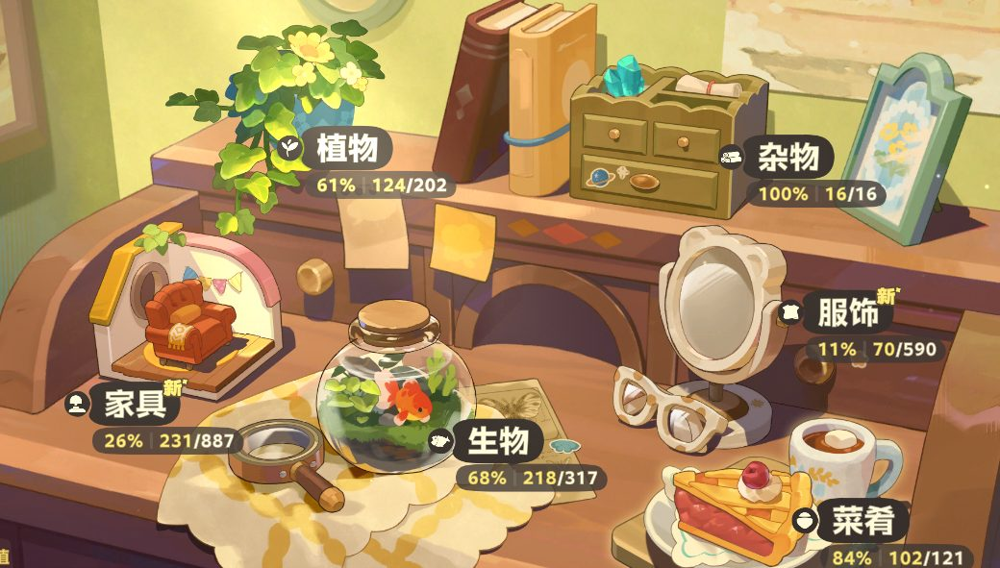

☰
星布谷地
·
图鉴 WIKI
🏠 首页
机制攻略
种植
机制
杂交
48 条
烹饪
93 条
图鉴总览
生物
297 行
植物
202 条
菜肴
121 条
露卡果实
23 条
星湾
7 条
杂物
16 条
图鉴数据
数据：植物
数据：水生生物
数据：陆地生物
数据：海岸生物
数据：菜肴
数据：露卡果实
数据：星湾
数据：杂物
友邻图鉴
云果
缇卡
萨飞里
哈佩诺
绵朵莉
热贝尔
蛮蛮
伊佐奇
多杰朗
鹤玉
其他
秋日钓鱼季
草帽
雨靴
排版说明
详情页模板
详情页模板：星湾
详情页模板：杂物
详情页模板：植物
详情页模板：菜肴
详情页模板：露卡果实

星布谷地 · 图鉴 WIKI
机制攻略 · 图鉴数据 · 友邻档案
常用内容
生物图鉴
水生 / 陆地 / 海岸 297 条
218 图标
植物图鉴
作物与花卉 202 条
菜肴与菜谱
配方与体力恢复 121 条
星湾 · 友邻
友邻档案与登场季节
10 位
机制攻略
种植
生长周期与产量
杂交
花卉杂交配方表
可筛选
烹饪
难度 / 厨具 / 效果
可筛选
图鉴一览
露卡果实
果实图鉴
23 条
杂物
道具图鉴
16 条
图鉴数据表
原始 data 表（被各图鉴页展开）
详情页模板
图鉴条目的排版规范
↑